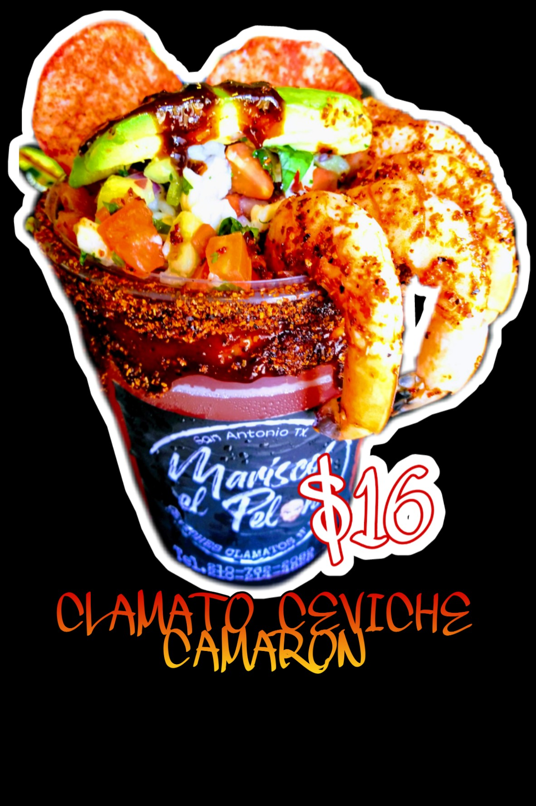
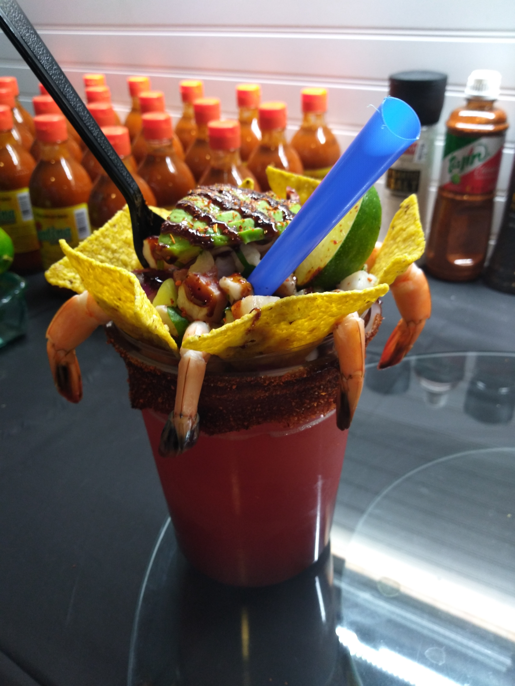

$16

PIÑA RELLENA DE CEVICHE CON CAMARON
La piña rellena es una de las especialidades ideal para personas con un gusto exotico, rellena de ceviche de pescado, camarones, aguacate y acompañada con rebanadas de piña da un toque tropical.
DELIVERY SERVICE
2107622089
2102144828
Mariscos el Pelon es un proyecto que inicio por el Cheff experto en mariscos Edgar Peña Cantu con mas de 20 años de trayectoria profesional en el sector gastronomico cuenta con un extenso conocimiento y grandes habilidades para elaborar diversos platillos de alta calidad.
Su pasion en la cocina y sus ganas de superacion personal lo ha inspirado a crear este innovador proyecto estamos convecidos que nuestros productos les van a encantar por lo que estamos trabajamos duramente con los procesos de mejora continua, estandares de calidad como PEPS y mise en place.
$16
CLAMATO CEVICHE CAMARON
Clamato ceviche con camaron es un opcion recomenada para botanear 100% clamato original acompañado de una porcion de ceviche de pescado ideal para quitar malestares como dolor de cabeza y cruda.
$16
PIÑA RELLENA DE CEVICHE CON CAMARON
La piña rellena es una de las especialidades ideal para personas con un gusto exotico, rellena de ceviche de pescado, camarones, aguacate y acompañada con rebanadas de piña da un toque tropical.
$15
CLAMATO CEVICHE CAMARON
Clamato ceviche con camaron es un opcion recomenada para botanear 100% clamato original acompañado de una porcion de ceviche de pescado ideal para quitar malestares como dolor de cabeza y cruda.